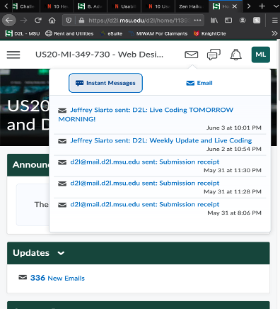
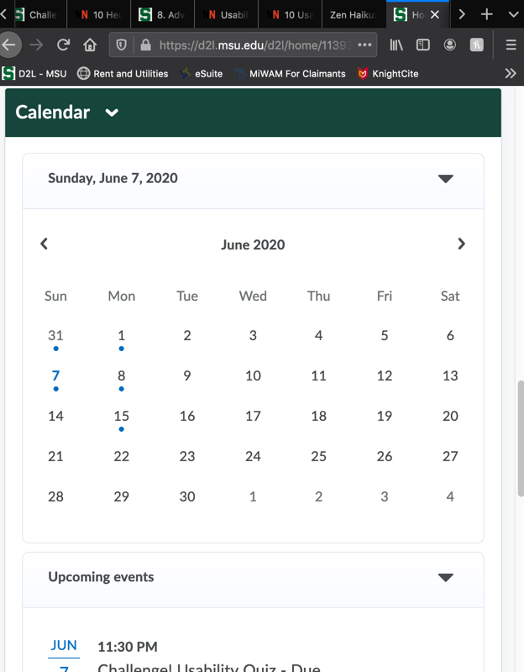
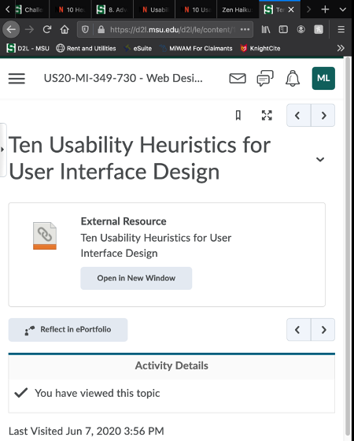
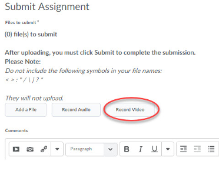
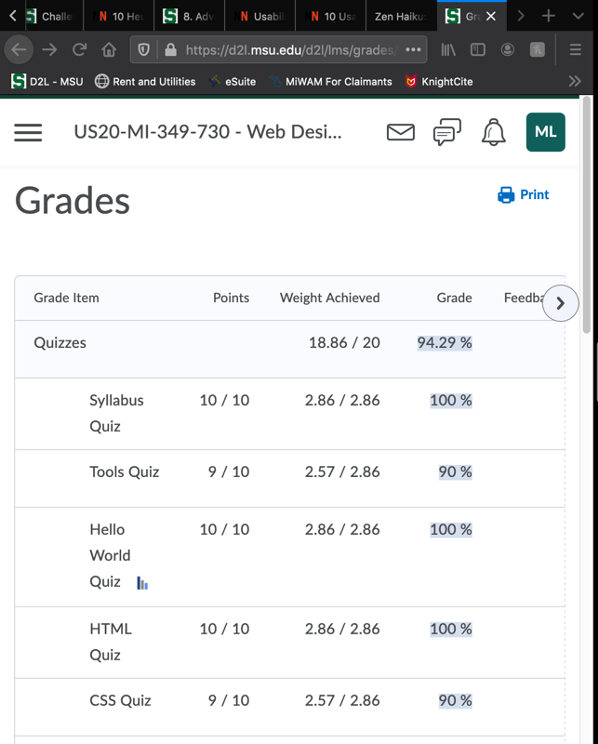
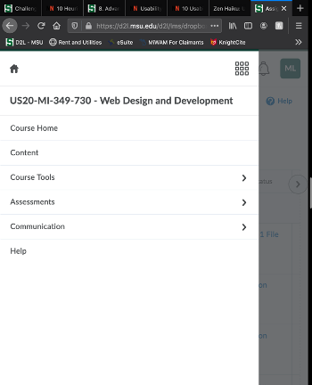
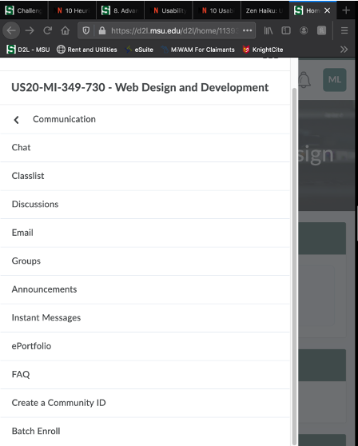
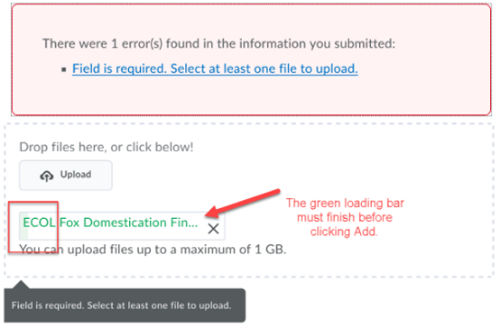
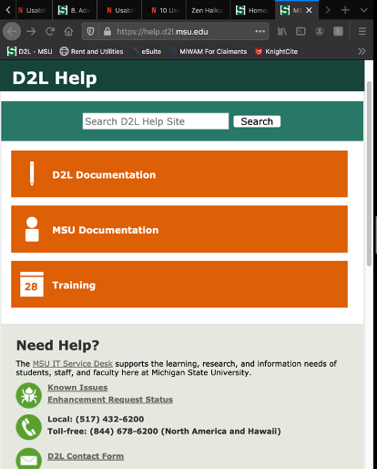

#1 Visibility of system status:
This should tell the user what is going on as they use D2L and many of its functions. For the most part, D2L gives pretty good user feedback after most if not all actions the user performs. This can be seen from the very beginning when you hover over one of your classes, the website zooms in on the image representing that class (visual feedback to show it is clickable). Perhaps my favorite is the feedback you are given to your email that is proof that you submitted something (drop box submission receipts). These are very useful to know your submission was successful (example picture of this is show below).

A few other things that really help are reminders that assignments are due soon, updates on an assignment that was just graded, and progress bars that fill over time as they upload your assignment.
#2 Match between system and the real world:
Does D2L match things from the real world to some of its processes? Honestly, not so much. It was slightly harder to come across this heuristic than the last. Most of the website is rather straight forward and does not have many similarities to how things are done in real life. The closest thing to it that I could find is the calendar. We use physical calendars the same way as D2L presents them. Here is a picture example:

Other than this, I don’t see a lot of things on D2L that follow this heuristic. The good thing is, it doesn’t really need to in order to function well. D2L could still improve in this area.
#3 User Control and freedom:
I think D2L actually does great in this area since it’s hard to get lost or stuck in a certain place. D2L has a toolbar at the top and sometimes to the left of the page giving you lots of ways to navigate freely and without problems. There always is an “out” as well so don’t worry about getting trapped! Additionally, D2L has its own forward and back arrows in some areas to assist you! An example picture of this can be seen below:

This helps users navigate comfortably!
#4 Consistency and standards:
Do the inner workings of D2L remain consistent as the user works? Mostly yes. While exploring various areas, I discovered that most clickable actions that are more important are presented as buttons with text rather than a clickable text. However, I did find inconsistencies with clickable text where you would not know it was clickable unless you clicked/hovered over it. A picture example below shows what I mean.
I have used D2L for years and didn’t know this line (the name of this course) was clickable! Also, that text looks to similar to the lines below in the Student resources section that aren’t clickable.
#5 Error prevention:
This is one of the areas that D2L fails miserably. All I have to say is that it will be hard to get a picture of an error since I still have no idea what causes them. Thus, I cannot cause them on purpose to show you. However, I can list a few that I have seen many times below:

#6 Recognize rather than recall:
D2L often requires you to remember how to use certain tools or how to get to certain places. This means it is requiring you to recall from memory how to use it and its functions more often than simply reminding you how from clues given by its creators. This is actually a bigger problem than one might think; I have been using D2L for over six years and I still get confused about where and how to find my actual answers on a quiz. It really annoys me when I can’t see what I got wrong and what I got right. The below picture example shows where I expect this to be available. However, there is simply no way to get that information in the “Grades” section.

After a bit of searching, I figured out that you need to go through the following process: Click “Assessments” > Click “Quizzes” > Click what is next to “Feedback:” under the “Evaluation Status” column that corresponds to the quiz you want to see (the thing you are actually clicking here can say “Read” or “On Attempt”) > Finally, Click the Attempt you wish to view (example: “Attempt 1”). Obviously, this is not good if I must recall this information so much. Even worse it is still confusing to me and is still confusing to explain after six years.
#7 Flexibility and efficiency of use
D2L seems ok to me now, but I was forced to use it for education purposes for over six years. This means that even though I am an experienced user, I still have problems sometimes. Also, I remember complaining a lot more about it when I first started using it until I got used to how bad it was. That means it totally fails this area. An example of this is simply the toolbar. I think it should give a one-line description of what each is.

The reason I think this is needed is because I still sometimes go to “Assessments” and then “Assignments” thinking I’ll find my current assignments I need to be working on, but instead it only lists old ones with no other information. Instead, I need to be going to “Content” for this ever time.
#8 Aesthetic and minimalist design:
I would say D2L also suffers in this department since there is so much on D2L that I never have used because I don’t need it, don’t know how it works, or don’t know it exists at all. There is a lot of random stuff that could probably be taken out to make room for more useful information for the user. Also, there may be some useful tools on D2L, but I simply don’t use them due to lack of information given about them. The picture example below shows some stuff I have never used:

I found that the entire area under “Communication” to be something I had almost never looked at or explored. When I do look through them, I have no clue how to really use them or why they are even a thing. The only one I thought to be somewhat useful was “Classlist” since it showed names of people in your class and their emails. That would actually be useful to me, but I never knew about it. D2L should really have a way to make their users aware of all of their tools, but also get rid of useless ones.
#9 Help users recognize, diagnose, and recover from errors:
Similar to #5, D2L struggles with everything in this area. When error messages appear (at least in my experience), they rarely give a way to help you recover from that error. This is mainly because they also don’t tell you why they were actually caused in the first place. The closest thing to helpful after getting an error is in the picture example below:

The only thing that I usually see is to call support and stay on hold which is a silly way of solving small errors that occur.
#10 Help and documentation:
Luckily, D2L does have some good resources if you really need technical help or maybe just guidance. You can call them directly or find their “Help” section within D2L which bring you to another webpage called “D2L Help”. This page gives you lots of options in order to get help. Here is a picture of the webpage below:

However, it is not practical to use for every small and annoying that D2L has.
In conclusion, I would say D2L definately can improve in the majority of heuristics we have gone through. This saddens me since it is supposed to be used as a tool for educating which is very important.